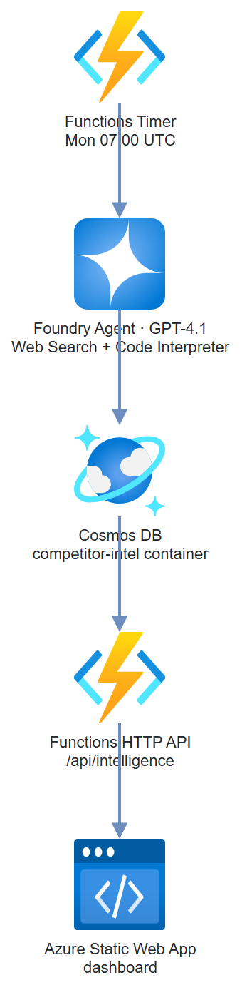

Build it yourself. This project is part of the AI Projects for Cloud Solution Architects portfolio. Full source, code, and the latest updates live in the csa-ai-projects repo on GitHub.
Schedule an agent to search for competitor news, generate trend charts, and store results in Cosmos DB — then surface everything in a dashboard that refreshes automatically.
What You're Building
An Azure Functions timer trigger that runs every Monday morning. It calls the Responses API with the hosted web search tool (Bing grounding) to pull competitor news and product updates, then hands the results to Code Interpreter to generate trend charts. Results land in Cosmos DB. An Azure Static Web App reads from Cosmos DB via a lightweight API and renders the dashboard.
Prerequisites
- Microsoft Foundry / Azure AI Services resource with GPT-4.1 deployed
- Azure Cosmos DB account (Serverless tier works well for low-frequency writes)
- Azure Static Web Apps resource
- Azure CLI logged in (
az login) with Cognitive Services OpenAI User on the AI Services resource and Cosmos DB Built-in Data Contributor on the Cosmos account — Entra ID auth, no keys - Python 3.11+,
azure-functions,openai,azure-cosmos
pip install "openai>=1.30.0" azure-identity azure-functions \
azure-cosmos python-dotenv
Architecture

Step-by-Step Build
Step 1 — Create Cosmos DB
COSMOS_ACCOUNT="competitive-intel-db"
DB_NAME="competitor-intel"
CONTAINER_NAME="weekly-intel"
az cosmosdb create \
--name $COSMOS_ACCOUNT \
--resource-group $RG \
--locations regionName=eastus2 \
--capabilities EnableServerless
az cosmosdb sql database create \
--account-name $COSMOS_ACCOUNT \
--resource-group $RG \
--name $DB_NAME
az cosmosdb sql container create \
--account-name $COSMOS_ACCOUNT \
--resource-group $RG \
--database-name $DB_NAME \
--name $CONTAINER_NAME \
--partition-key-path "/competitor"
Step 2 — Enable web search grounding in Foundry
The Responses API exposes a hosted web_search tool. Make sure web/Bing grounding is enabled for your Foundry resource:
- In the AI Foundry portal, navigate to your project
- Go to Settings → Connections and confirm a Bing Search / web grounding connection exists (add one if not)
- No connection name is needed in code — the hosted
web_searchtool is requested directly on each Responses API call
Step 3 — Set up the client and instructions
There's no separate agent to register. The Responses API takes the instructions and the tools — hosted web_search (recent news) and code_interpreter (the sentiment chart) — on each call. Both tools run their loops server-side.
import os
import json
import base64
import re
from datetime import datetime, timezone
from dotenv import load_dotenv
from azure.identity import DefaultAzureCredential, get_bearer_token_provider
from openai import AzureOpenAI
from azure.cosmos import CosmosClient
load_dotenv()
COSMOS_ENDPOINT = os.environ["COSMOS_ENDPOINT"]
DB_NAME = "competitor-intel"
CONTAINER_NAME = "weekly-intel"
MODEL = os.environ.get("INTEL_MODEL", "gpt-4.1")
credential = DefaultAzureCredential()
client = AzureOpenAI(
azure_endpoint=os.environ["AZURE_OPENAI_ENDPOINT"],
azure_ad_token_provider=get_bearer_token_provider(
credential, "https://cognitiveservices.azure.com/.default"),
api_version="2025-04-01-preview",
)
cosmos = CosmosClient(url=COSMOS_ENDPOINT, credential=credential)
container = cosmos.get_database_client(DB_NAME).get_container_client(CONTAINER_NAME)
TOOLS = [
{"type": "web_search"},
{"type": "code_interpreter", "container": {"type": "auto"}},
]
INSTRUCTIONS = """You are a competitive intelligence analyst. Your job each week:
1. Search the web for recent news (last 7 days) about each competitor provided
2. Categorize findings: product launches, pricing changes, partnerships, executive moves, negative press
3. Write a brief analysis (2-3 sentences) for each competitor
4. Use the python (code_interpreter) tool to generate a sentiment trend bar chart (matplotlib):
- X-axis: competitor names
- Y-axis: news sentiment score (-5 to +5)
- Title: "Competitor News Sentiment — Week of [date]"
- Save the chart as a PNG file
5. End your reply with a single JSON object with this structure:
{
"week_of": "YYYY-MM-DD",
"competitors": [
{
"name": "CompetitorName",
"sentiment_score": <-5 to 5>,
"key_developments": ["...", "..."],
"analysis": "...",
"sources": ["url1", "url2"]
}
],
"overall_summary": "..."
}
Be factual. Cite sources. Don't speculate."""
Step 4 — Run the weekly intelligence sweep
def run_weekly_intel(competitors: list[str]) -> dict:
"""Run competitive intelligence sweep for the given competitor list."""
week_str = datetime.now(timezone.utc).strftime("%Y-%m-%d")
competitor_list = ", ".join(competitors)
print(f"Running intel sweep for: {competitor_list}")
response = client.responses.create(
model=MODEL,
instructions=INSTRUCTIONS,
input=(
f"Run a competitive intelligence sweep for week of {week_str}.\n"
f"Competitors to analyze: {competitor_list}\n\n"
"Search for news from the last 7 days for each. "
"Generate the sentiment chart and return structured JSON."
),
tools=TOOLS,
)
intel_text = response.output_text
# The code_interpreter tool runs in a container that holds any files it created
container_id = None
for item in response.output:
if getattr(item, "type", None) == "code_interpreter_call":
container_id = getattr(item, "container_id", None)
# Parse the trailing JSON object from the response
intel_data = {"raw": intel_text, "week_of": week_str}
json_match = re.search(r"\{[\s\S]*\}", intel_text)
if json_match:
try:
intel_data = json.loads(json_match.group())
except json.JSONDecodeError:
pass
# Download the chart PNG the tool generated, if any
chart_b64 = None
if container_id:
for f in client.containers.files.list(container_id=container_id).data:
name = (getattr(f, "path", None) or f.id)
if name.endswith(".png"):
content = client.containers.files.content.retrieve(
f.id, container_id=container_id)
chart_b64 = base64.b64encode(content.read()).decode()
break
return {**intel_data, "chart_b64": chart_b64, "response_id": response.id}
Step 5 — Store results in Cosmos DB
def store_intel_results(intel_data: dict, competitors: list[str]):
"""Write one document per competitor per week to Cosmos DB."""
week_of = intel_data.get("week_of", datetime.now(timezone.utc).strftime("%Y-%m-%d"))
# Store aggregate document
aggregate_doc = {
"id": f"weekly-{week_of}",
"competitor": "_aggregate",
"week_of": week_of,
"overall_summary": intel_data.get("overall_summary", ""),
"chart_b64": intel_data.get("chart_b64"),
"created_at": datetime.now(timezone.utc).isoformat(),
"competitor_count": len(competitors)
}
container.upsert_item(aggregate_doc)
# Store per-competitor documents
for comp_data in intel_data.get("competitors", []):
name = comp_data.get("name", "unknown")
doc = {
"id": f"{name.lower().replace(' ', '-')}-{week_of}",
"competitor": name,
"week_of": week_of,
**comp_data,
"created_at": datetime.now(timezone.utc).isoformat()
}
container.upsert_item(doc)
print(f"Stored intel for: {name}")
Step 6 — Azure Function timer trigger
# function_app.py
import azure.functions as func
import logging
import json
app = func.FunctionApp()
logger = logging.getLogger(__name__)
COMPETITORS = [
"Competitor A",
"Competitor B",
"Competitor C"
]
@app.timer_trigger(
arg_name="timer",
schedule="0 0 7 * * MON" # Every Monday at 07:00 UTC
)
def weekly_intel_sweep(timer: func.TimerRequest):
if timer.past_due:
logger.warning("Timer is past due — running catch-up sweep")
logger.info("Starting weekly competitive intelligence sweep")
intel_data = run_weekly_intel(COMPETITORS)
store_intel_results(intel_data, COMPETITORS)
logger.info(f"Sweep complete. Analyzed {len(COMPETITORS)} competitors.")
@app.route(route="intelligence", methods=["GET"])
def get_intelligence(req: func.HttpRequest) -> func.HttpResponse:
"""HTTP endpoint for the dashboard to fetch stored results."""
weeks = int(req.params.get("weeks", "8"))
competitor = req.params.get("competitor")
query = "SELECT * FROM c ORDER BY c.week_of DESC OFFSET 0 LIMIT @limit"
params = [{"name": "@limit", "value": weeks * (len(COMPETITORS) + 1)}]
if competitor:
query = ("SELECT * FROM c WHERE c.competitor = @comp "
"ORDER BY c.week_of DESC OFFSET 0 LIMIT @limit")
params.append({"name": "@comp", "value": competitor})
results = list(container.query_items(
query=query,
parameters=params,
enable_cross_partition_query=True
))
return func.HttpResponse(
json.dumps(results),
status_code=200,
mimetype="application/json",
headers={"Access-Control-Allow-Origin": "*"}
)
Test It
Run the sweep manually without waiting for Monday:
# Trigger the function locally
func start
# In another terminal:
curl -X POST http://localhost:7071/admin/functions/weekly_intel_sweep \
-H "Content-Type: application/json" \
-d '{}'
# Check the results API
curl "http://localhost:7071/api/intelligence?weeks=4"
Verify in Cosmos DB:
az cosmosdb sql query \
--account-name $COSMOS_ACCOUNT \
--resource-group $RG \
--database-name competitor-intel \
--container-name weekly-intel \
--query-text "SELECT c.competitor, c.week_of, c.sentiment_score FROM c" \
--output table
Common Mistakes
- Reaching for the old Assistants
agentsAPI.azure-ai-projects2.x removed the threads/runs Assistants surface —AIProjectClienthas no.agents, andWebSearchTool/PromptAgentDefinition/MessageRoleno longer drive a run. Useclient.responses.create(..., tools=[{"type":"web_search"}, {"type":"code_interpreter", ...}]); both tools run server-side, so a single call returns the analysis and any generated chart. - Looking for the chart on a message block. With the Responses API the chart isn't an
image_filecontent block — it's a file inside thecode_interpretercontainer. Find thecode_interpreter_callitem'scontainer_id, then list/download container files (client.containers.files). - Bing search returning stale results. Web Search grounding uses recency ranking but doesn't guarantee freshness. Add
"in the last 7 days"to your search queries explicitly. - Cosmos DB partition key strategy. Using
competitoras partition key is fine for reads by competitor. If you query byweek_offrequently, use a composite index or add a synthetic partition key. - Chart not generated. Code Interpreter needs matplotlib installed in its sandbox — it comes pre-installed. If charts aren't appearing, check that your agent instructions explicitly say "save as PNG file attachment."
Extend It
- Email digest: Add a step after Cosmos DB write that calls SendGrid API to email the weekly dashboard summary to stakeholders — no login required.
- Historical trend lines: Store 12 weeks of sentiment scores per competitor, then have Code Interpreter generate line charts showing sentiment trends over time.
- Slack alerts on negative spikes: Add a threshold check — if any competitor's sentiment_score drops below -3, immediately post to a Slack channel with the key developments.